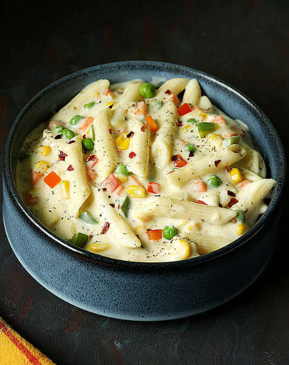

Pasta Recipe
Home

DESCRIPTION
To make creamy white sauce pasta, start by boiling pasta in salted water until al dente, then drain and set aside. In a pan, melt butter and sauté minced garlic until fragrant. Add all-purpose flour and cook for a minute, stirring continuously. Gradually pour in warm milk, whisking to avoid lumps, and let it thicken. Season with salt, black pepper, and oregano, then mix in grated cheese for extra creaminess. Toss in cooked pasta and mix well to coat evenly. Optionally, add sautéed vegetables like bell peppers, mushrooms, or sweet corn for added flavor. Serve hot, garnished with chili flakes and fresh herbs.
INGREDIENTS
- 200g pasta
- 2 tbsp butter
- 2 tbsp all-purpose flour
- 2 cups warm milk
- 1 cup grated cheese
- Salt and black pepper to taste
- 1 tsp oregano
- Chili flakes (optional)
- Sautéed vegetables (optional)
STEPS
- Boil pasta in salted water until al dente, then drain and set aside.
- In a pan, melt butter and sauté minced garlic until fragrant.
- Add all-purpose flour and cook for a minute, stirring continuously.
- Gradually pour in warm milk, whisking to avoid lumps, and let it thicken.
- Season with salt, black pepper, and oregano, then mix in grated cheese.
- Toss in cooked pasta and mix well to coat evenly.
- Optionally, add sautéed vegetables for added flavor.
- Serve hot, garnished with chili flakes and fresh herbs.